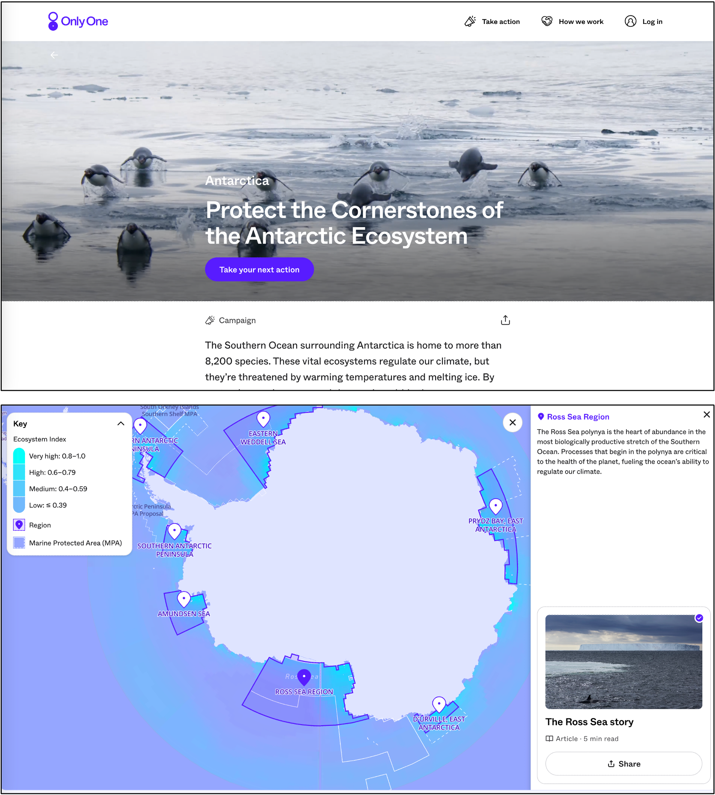
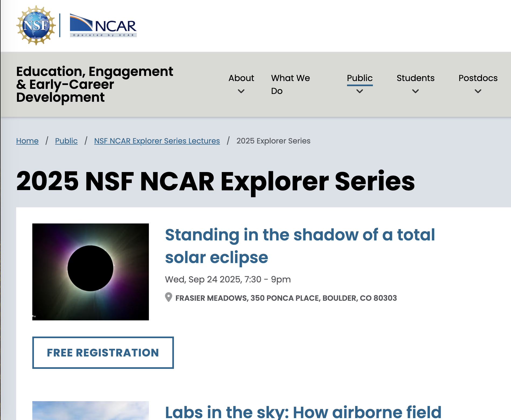

I participate in NSF NCAR's annual Super Science Saturday . On this day, the general public to come visit the Mesa Laboratory in Boulder, CO and learn about science. At this event, people experience hands-on sea ice focused activities include dyeing fresh and saline ice, experimenting with "blubber gloves" to see how polar bears are insulated, measuring how many kids tall a polar bear is, or observing the albedo effect.

I have worked with Professor Anna Lindemann from the University of Connecticut on "Arctic Shifts", a project about the changing Arctic. In the animated short “Arctic Shifts,” scientific climate simulations and speculative storytelling combine to reveal the connections between our human activity and the ecosystem and environmental changes occurring in the Arctic from a microscopic to macroscopic scale. The film is part of an exhibit at the NCAR Mesa Laboratory public museum in Boulder, CO. It has also been featured in a number of film festivals and other exhibitions. A link to Anna's website is below with more information about the film and how to watch it.

I have partnered with storytellers at Only One to help tell stories about important biophysical connections in different regions around Antarctica. These stories bring together science, media, and photography to tell people what's at risk in the Antarctic if we fail to protect it. Each region is special and has a unique place in the Antarctic ecosystem. We have also designed an interactive map so that people can explore these regions and how valuable they are for different species from phytoplankton (microscopic marine plants) to penguins.

I have given several public lectures about the changing polar regions - context, observations, and Earth system model projections. I think it's important to help people understand the dramatic changes occurring in the polar regions, even if this means facing our role in the causes of change.
I was interviewed by a University of Connecticut senior class in Fine Art. The students animated our interview and created the film: "Climate Change: A Call to Action." This film won honorable mention in animation at the One Earth Festival in 2022. Link to the film is below.

I have been chair and on the organizing of a number of modeling tutorials intended for graduate students. The foci of these tutorials have been on how to use the Community Earth System Model (CESM), the CICE and Icepack sea ice models, and polar Earth system modeling.

Since I was an undergraduate, I have enjoyed designing and leading science outreach with K-12 students. At Colorado College, I led the "Cool Science" club, which ran many K-12 outreach activities throughout the year. I helped design a rage of activities for kids on physics, chemistry, aerodynamics, and biology. I especially enjoy making scientific principles accessible and seeing kids have an "aha" moment. Kids have so much enthusiasm and excitement and interest in the world.

I chaired and served on the American Meteorological Society (AMS) Committee for Polar Meteorology and Oceanography. I organized community meetings virtually in 2021 and in Madison, WI in 2022. I also completed an interview with the AMS Clear Skies Ahead podcast about being a polar Earth system scientist.